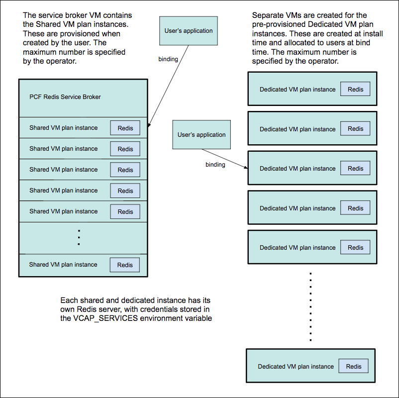
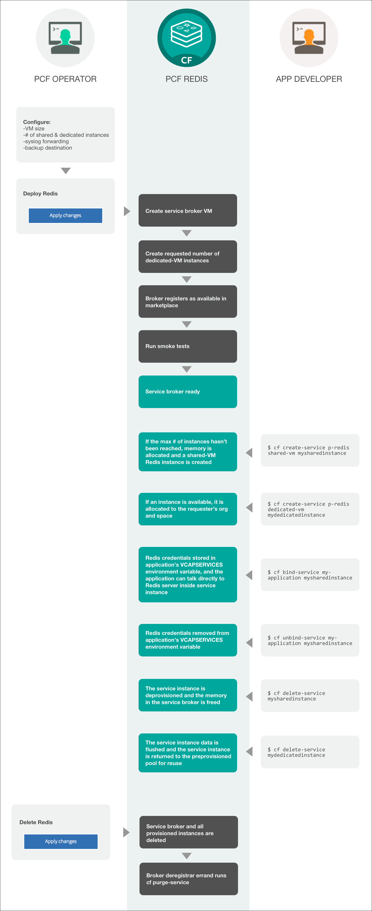

Redis for PCF 1.8 Architecture and Lifecycle
How Redis for PCF Configures Redis
For On-Demand VMs, certain Redis configurations can be set by the operator during plan configuration, and by the app developer during instance provisioning. Other Redis configurations cannot be changed from the default.
- Operator configurable Redis settings include:
timeout,tcp-keepalive,maxclientsandlua scripting. Please see the Operator guide for more detail. - App-Developer configurable Redis settings include:
maxmemory-policy,notify-keyspace-events,lua-time-limit,slowlog-log-slower-than,slowlog-max-len. Please see the App Developer guide for more detail.
For Dedicated-VM and Shared-VM plans, the default Redis configurations cannot be changed.
A sample redis.conf from a Dedicated-VM plan instance can be viewed on Sample Redis Configuration
Redis is configured with a
maxmemory-policyof no-eviction. This policy means that when the memory is full, the service does not evict any keys or perform any write operations until memory becomes available.Persistence is configured for both
RDBandAOF.The default maximum number of connections,
maxclients, is set at 10000 but this number is adjusted by Redis according to the number of file handles available.Replication and event notification are not configured.
Service Plans
Redis for PCF offers On-Demand, Dedicated-VM and Shared-VM plans.
On-Demand Plans
- These plans are operator-configured and enabled. Once enabled, app developers can provision a Redis instance from that plan.
- You can disable any of the three on-demand plans in the plan’s page in OpsManager.
- The maximum number of instances is managed at by a per-plan and global quota. The maximum number of instances cannot surpass 50.
- Operators can update the plan settings, including the VM size, disk size and Redis configuration settings, after the plans have been created. Operators should not downsize the VMs or disk size as this can cause data loss in pre-existing instances.
- App Developers can update certain Redis configurations.
Shared-VM Plan
- This plan deploys a Redis instance inside the service broker VM.
- You can disable this plan by setting the
Max instances limiton theShared-VM plantab in OpsManager to be0. - The maximum number of instances can be increased from the default 5 to a value of your choosing. If you increase the number of instances that can be run on this single VM, you should consider increasing the resources allocated to the VM. In particular RAM and CPU. You can overcommit to a certain extent, but may start to see performance degradations.
- You can also increase the maximum amount of RAM allocated to each Redis process (service instance) that is running on this VM
- If you decrease the service instance limit, any instances that are running where the count is now greater than the limit are not terminated. They are left to be removed naturally, until the total count drops below the new limit you cannot create any new instances. For example if you had a limit of 10 and all were used and reduced this to 8, the two instances will be left running until you terminate them yourself.
Dedicated-VM Plan
- This plan deploys the operator-configured number of dedicated Redis VMs alongside the service broker VM.
- These instances are pre-provisioned during the deployment of the tile from OpsManager into a pool. The VMs are provisioned and configured with a Redis process ready to be used when an instance of the Dedicated-VM plan is requested.
- A default deployment will provision
5 instancesof the Dedicated-VM plan into the pool. This number can be increased on theResource Configtab in Ops Manager, either in the initial deployment, or subsequently thereafter. The number of VMs cannot be decreased once deployed. - When a user provisions an instance, it is marked as in use and taken out of the pool.
- When a user deprovisions an instance, the instance is cleansed of any data and configuration to restore it to a fresh state and placed back into the pool, ready to be used again.
- You can disable this plan by setting the number of instances of the
Dedicated nodejob in Ops Manager to0.
Redis for PCF Architecture
This diagram shows how the architecture of the service broker and Shared-VM and Dedicated-VM plans and how the user’s app binds to a Redis instance.

Redis for PCF Lifecycle
Here is the lifecycle of Redis for PCF, from an operator installing the tile through an app developer using the service then an operator deleting the tile.
